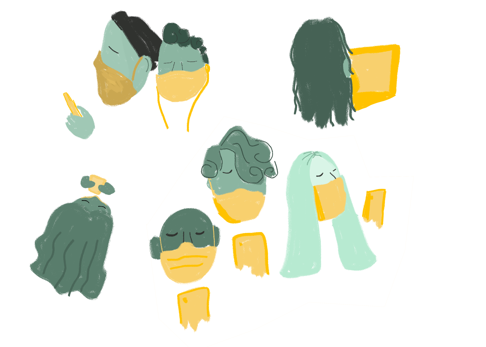

¿Recurrimos más a la tecnología durante la pandemia por la COVID-19? ¿Impactó su uso en nuestro bienestar personal? El estudio internacional Bienestar y tecnología en confinamiento da algunas pistas sobre cómo se vivieron estas cuestiones en Uruguay
Bienestar y tecnología en confinamiento es un estudio cuyo objetivo es explorar el bienestar de las personas y su uso de la tecnología en el contexto de la pandemia causada por la llegada de la Covid-19, asociado al llamado Coronavirus. Es decir, midió los impactos de la cuarentena, forzada o voluntaria a raíz de la circulación del virus. El proyecto, impulsado por investigadores del grupo Youth in Transition, del Instituto de Cultura y Sociedad (ICS) de la Universidad de Navarra, y en el que la FCOM se encargó del reporte de Uruguay, incluye también datos de Argentina, Chile, Colombia, Ecuador, El Salvador, España, Guatemala, México, Perú y Venezuela.
Para explorar el impacto de la cuarentena en el bienestar y en el uso de la tecnología, se realizó una encuesta que fue respondida por personas mayores de 18 años de todos estos países: un cuestionario online, que abarcó factores sociológicos, psicológicos y comunicacionales. En concreto, en Uruguay se obtuvieron 865 respuestas, en un período que abarcó del 30 de marzo al 26 de junio inclusive, aunque el 80% de las respuestas uruguayas se concentraron en abril.
En Uruguay, no se llegó a decretar la cuarentena obligatoria cuando se detectaron los primeros casos de Covid-19, pero sí se desplegó un arsenal de medidas: suspensión de clases presenciales en todos los niveles; cierre de shoppings y locales comerciales; empresas que cambiaron -algunas de manera forzada- a la modalidad de teletrabajo o home office; suspensión de las intervenciones quirúrgicas, de estudios médicos y de las consultas presenciales; cierre de fronteras; entre otras que favorecieron el confinamiento en los hogares en lugar de la circulación. A estas medidas se les sumó un pedido: “Quedate en casa”, apelando a la libertad responsable de los ciudadanos, que respondieron. Según el estudio, los uruguayos se quedaron en casa o salieron poco: un 14% no salió nunca y un 51%, solo entre una y dos veces por semana. El virus, entonces, forzó a una cuarentena que, si bien en Uruguay no llegó a ser obligatoria, se respetó mayoritariamente. De este modo, los ciudadanos se encontraron más tiempo en sus hogares, con diferentes opciones tecnológicas a la mano.
Los uruguayos utilizaron los dispositivos un promedio de casi 9 horas diarias en total, pero este valor varía según los grupos de edad, tal como se observa en el gráfico xxx. Los más jóvenes son quienes pasan más horas diarias frente a las pantallas (unas 10 horas), mientras que en los adultos mayores de 60 años este tiempo se reduce casi a la mitad. Sin embargo, no hay diferencias, respecto al sexo.
Entre las actividades analizadas, los dispositivos se usan principalmente para trabajar, actividad que ocupa más horas en el día -casi 5-, seguida por la acción de comunicarse o mandar mensajes con 4,5 horas diarias en promedio. En el caso del uso de los dispositivos para navegar por las redes sociales, los más jóvenes -18 a 22 años- también son aquellos que le dedican más tiempo, con un promedio diario de 3,5 horas. A su vez, dentro de este grupo etario, un 6% pasa más de 10 horas en las redes, mientras que un 2% aseguró no usarlas.
Si se analiza en concreto el celular, comunicarse, entretenerse e informarse son las actividades para las que más lo usan. Pero, como se ha visto anteriormente, los usos varían según la de edad. Por ejemplo, un 83% de los jóvenes de entre 18 y 29 años dice utilizar el celular mucho o bastante para entretenerse, mientras que los demás grupos etarios promedian un 50%.
En este estudio, se considera uso problemático cuando… Con esta medida, un 66% de los encuestados no tiene un uso problemático o adictivo del celular; sin embargo, los que consideran que controlan poco o nada su uso alcanzan un 48% del total, por encima de los que podrían catalogarse como uso problemático según la escala. Entre los más jóvenes, el uso problemático del celular llega a un 49%, pero disminuye con la edad. Esto también podría relacionarse con el tiempo diario que pasan frente a las pantallas: las personas de 18 a 22 son las que dedican más horas.
¿Qué pasó en la cuarentena respecto al uso de los dispositivos? Si los jóvenes son aquellos que pasan más horas frente a las pantallas y tienen una mayor adicción al celular, también son quienes perciben un aumento superior del uso de este desde que empezó el estado de alarma. Más de 7 de cada 10 personas de entre 18 y 29 años consideran que ha aumentado bastante o mucho. El segundo grupo de edad que percibió un aumento más importante del uso del celular es el de los adultos de más de 60 años, un crecimiento que se podría relacionar con la búsqueda de información sobre la Covid-19 a través de este dispositivo: casi la mitad de los adultos mayores aumentó mucho o bastante su uso para este fin. (VISUALIZACIÓN DE AUMENTO DE USO DE INFORMATIVO) En el total de los encuestados, un 63% percibe un aumento del uso del celular desde el inicio de la pandemia y un 44%, en la búsqueda de información sobre este nuevo virus
Si bien se cree que el uruguayo es pesimista, la encuesta determinó que la mayoría se encuentra en un estado moderado entre el malestar y el bienestar. No se detecta un malestar tan alto como para considerarse pesimistas, pero tampoco un bienestar elevado: se movería en la escala de los grises. En los adultos, predominan los niveles de bienestar alto y en los jóvenes, en cambio, son más frecuentes los niveles de malestar alto.
La variable índice de bienestar combina la medida de malestar y bienestar y se evalúa en una escala del 0 al 10. Como se observa en el gráfico xxx, los adultos a partir de los 40 años tienen un índice de bienestar más alto, que en los mayores de 60 se acerca casi al valor 8,0. Por el contrario, los más jóvenes están más cerca del valor 6,0 y se encuentran por debajo del promedio del total de los encuestados -6,94-.
Además, los jóvenes de 18 a 29 años también son los que presentan mayores niveles de ansiedad, depresión y estrés. Por lo tanto, al evaluar todos estos factores, tampoco es casualidad que este grupo etario sea el que percibió un mayor aumento del malestar desde que comenzó el estado de emergencia en el país. En general, un 34% de las personas considera que aumentó mucho o bastante, pero en estos jóvenes asciende a un 42%.
Al analizar el bienestar de las personas por sexo, si bien hombres y mujeres coinciden prácticamente en los niveles de alto bienestar, ellas presentan mayores niveles de alto malestar. Además, aunque no se observan grandes diferencias respecto a la sensación de ansiedad, depresión o estrés, igualmente en los tres casos los valores son mayores en las mujeres, si se consideran niveles de moderado a severo. Finalmente, ellas percibieron un mayor aumento del malestar desde el inicio de la pandemia que los hombres.
Por lo tanto, si bien esta investigación es un estudio descriptivo que no permite establecer una causalidad, sí se observa una relación entre la salud mental y el aumento del malestar en cuarentena. Es decir, no es posible determinar que la cuarentena sea la causa del aumento del malestar en las personas que perciben mayores niveles de ansiedad, depresión y estrés, pero sí se puede afirmar que están correlacionados: quienes sienten niveles más altos, también percibieron un mayor malestar desde que comenzó el estado de emergencia.
En las secciones anteriores, se describió que los jóvenes son quienes pasan más tiempo diario frente a la pantalla, tienen una mayor adicción al celular -cuyo uso aumentó en cuarentena-, pero también son los que sienten mayor malestar psicológico -ansiedad, depresión y estrés- que, a su vez, también consideran que aumentó desde el inicio del estado de emergencia. Entonces, pareciera que el uso de la tecnología y el malestar estarían asociados, más allá de que no sea posible de detectar causas y efectos.
¿Cómo fue esta relación durante la cuarentena? Para profundizar en este aspecto, se compararon algunas variables con la percepción del aumento del malestar desde su inicio.
En primer lugar, se analizó cómo es el uso del celular según algunas actividades definidas. Entre los encuestados que no perciben aumento del malestar, un 58% dice que no utiliza nada el celular para evadirse. Este porcentaje disminuye a un 25%, es decir, menos de la mitad, entre aquellos que sienten un mayor aumento de ese malestar. Asimismo, entre ellos, un 37% considera que el uso para este fin es mucho o bastante.
Respecto al uso del celular para entretenerse, aun en el caso de los que no perciben nada de aumento del malestar desde que empezó la pandemia, un 58% dice usar bastante o mucho el celular para ese fin. Igualmente, el porcentaje aumenta a medida que aumenta la percepción de mayor malestar, llegando a un 69% entre quienes perciben que aumentó mucho.
En cuanto a la actividad “chusmear” o “chismear” -enterarse de lo que hacen otros-, también hay un aumento significativo del uso del celular según los niveles de malestar: de quienes no perciben nada de aumento del malestar, el 22% dice usarlo bastante o mucho, pero se duplica -45%- en aquellos que sienten bastante o mucho aumento del malestar desde el inicio de la pandemia. El uso para chismear también podría estar asociado con el uso para entretenerse o evadirse, si se la considera como una forma de distraerse.
En esa línea, evadirse, entretenerse y chismear van de la mano con las redes sociales, dado que son los tipos de uso con mayor tiempo dedicado por día, como puede observarse en el gráfico xxx, junto con compras, expresar o buscar afecto y porno. A su vez, el tiempo promedio aumenta a medida que aumenta la percepción de malestar: las personas que perciben que el aumento de su malestar fue mayor le dedican una hora más por día a las redes sociales que aquellos que no percibieron ninguna variación. Del mismo modo, en relación al tiempo total que le dedican a los dispositivos, los primeros están frente a las pantallas casi dos horas diarias más que los segundos.
A su vez, el tiempo promedio aumenta a medida que aumenta la percepción de malestar: las personas que perciben que el aumento de su malestar fue mayor están frente a las pantallas casi dos horas diarias más que aquellos que no percibieron ninguna variación. Del mismo modo, por ejemplo en relación al tiempo que pasan en las redes sociales, los primeros dedican una hora más por día que los segundos.
En esa línea, entre quienes presentan niveles altos de malestar, un 30% percibió que aumentó mucho el uso del celular desde el inicio de la pandemia, mientras que este valor se reduce a la mitad entre los que tienen niveles altos de bienestar.
Asimismo, quienes en cuarentena tuvieron una sensación de mayor malestar, no solo dedicaron más tiempo al uso de dispositivos, sino que también fueron los que más disminuyeron el tiempo que dedican a hacer ejercicio físico o a hobbies que no necesariamente impliquen estar frente a una pantalla.
Por lo tanto, nuevamente se podría establecer una relación entre el uso de la tecnología, el malestar y, en concreto, la percepción del aumento de este desde que comenzó la pandemia por el Covid-19. De todos modos, no se puede indicar la dirección de estas relaciones. Una explicación podría ser que, al estar más tiempo en sus casas por la cuarentena y aumentar el uso del celular -tal como se vio anteriormente- o de otros dispositivos -por ejemplo, para trabajar por el home office o para conectarse a clases virtuales-, pasan más horas frente a las pantallas y esto les provoca malestar. También podría ser que el estado de emergencia en sí mismo sea la causa del aumento del malestar y que esto conduzca a que utilicen más la tecnología, por ejemplo, como forma de evadirse. Pero, nuevamente, no es posible determinar esa causalidad.
Finalmente, la percepción del aumento de malestar desde el inicio de la pandemia también se asocia con la búsqueda de información sobre el Covid-19. Aquellos que perciben mayores aumentos del malestar también son quienes han buscado más información sobre este tema. En concreto, un 56% de ellos ha aumentado las búsquedas bastante o mucho; esto se reduce a un 25% - es decir, menos de la mitad- entre quienes no sintieron cambios en su estado psicológico. Entonces, ¿estar más expuestos a las noticias sobre el virus y sus efectos en la sociedad genera mayores niveles de malestar? ¿O podría ser que aquellos que tienen un alto malestar están más horas frente a los dispositivos y, de este modo, buscan más información?